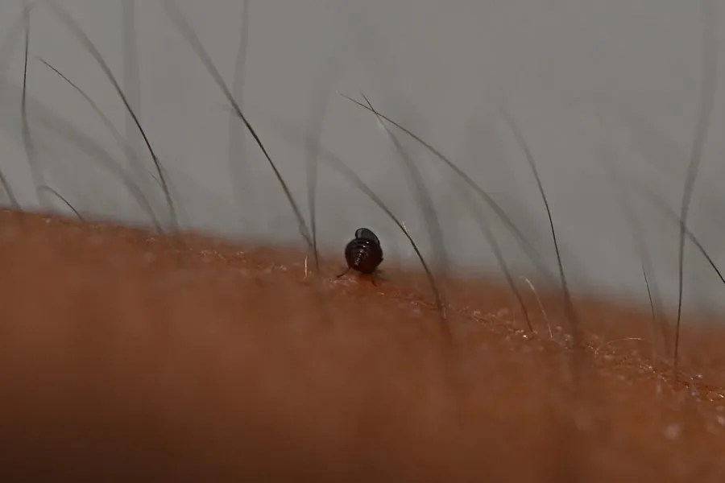

昆虫 · 动物界
台湾蠛蠓 Lasiohelea taiwana

比蚊子更小的吸血蠓类，常在白天成群叮咬人和动物，被咬后奇痒难忍，是中国南方和台湾地区常见的骚扰性昆虫。
- 分类
- 门节肢动物门纲昆虫纲目双翅目科蠓科属蠛蠓属
- 栖息环境
- 潮湿的土壤、苔藓和腐殖质周围，成虫白天成群活动
- 地理分布
- 中国南方、台湾及东南亚地区
- 保护级别
- 暂无评估
物种志
台湾蠛蠓成虫体长仅 1–2 mm，体色黑色或深褐色，比蚊子小得多，停息时翅膀平叠在背上。它的触角细长，口器短小，适合刺吸皮肤。
台湾蠛蠓分布于中国南方、台湾及东南亚地区。幼虫生活在潮湿的土壤、苔藓和腐殖质中，成虫羽化后成群活动。雌蠓吸血，多在白天活动，喜欢群集叮咬人的小腿、手臂和颈部，被咬后皮肤出现红肿和剧烈瘙痒，俗称“小黑蚊”。它可能传播某些虫媒病毒和寄生虫，但主要危害是骚扰性叮咬，影响人们户外活动和旅游体验。防治上要注意清除潮湿的苔藓和腐殖质、穿长袖衣物和使用驱避剂。目前它没有IUCN 的正式评估，中国未将其列入国家重点保护野生动物名录。
形态与习性
- 食性雌蠓吸血，雄蠓不吸血
- 体长仅 1–2 mm，比蚊子小得多
- 活动时间多在白天活动，成群叮咬人畜
- 幼虫栖息潮湿的土壤、苔藓和腐殖质中
- 叮咬反应被咬后皮肤红肿、剧烈瘙痒，俗称“小黑蚊”
- 防治清除苔藓和腐殖质、穿长袖、使用驱避剂
趣味知识
- 台湾蠛蠓只有 1–2 mm 长，比蚊子小得多，叮咬时几乎感觉不到。
- 它白天活动，常成群叮咬人的小腿和手臂。
- 被蠛蠓叮咬后往往奇痒难忍，红肿几天才消退。